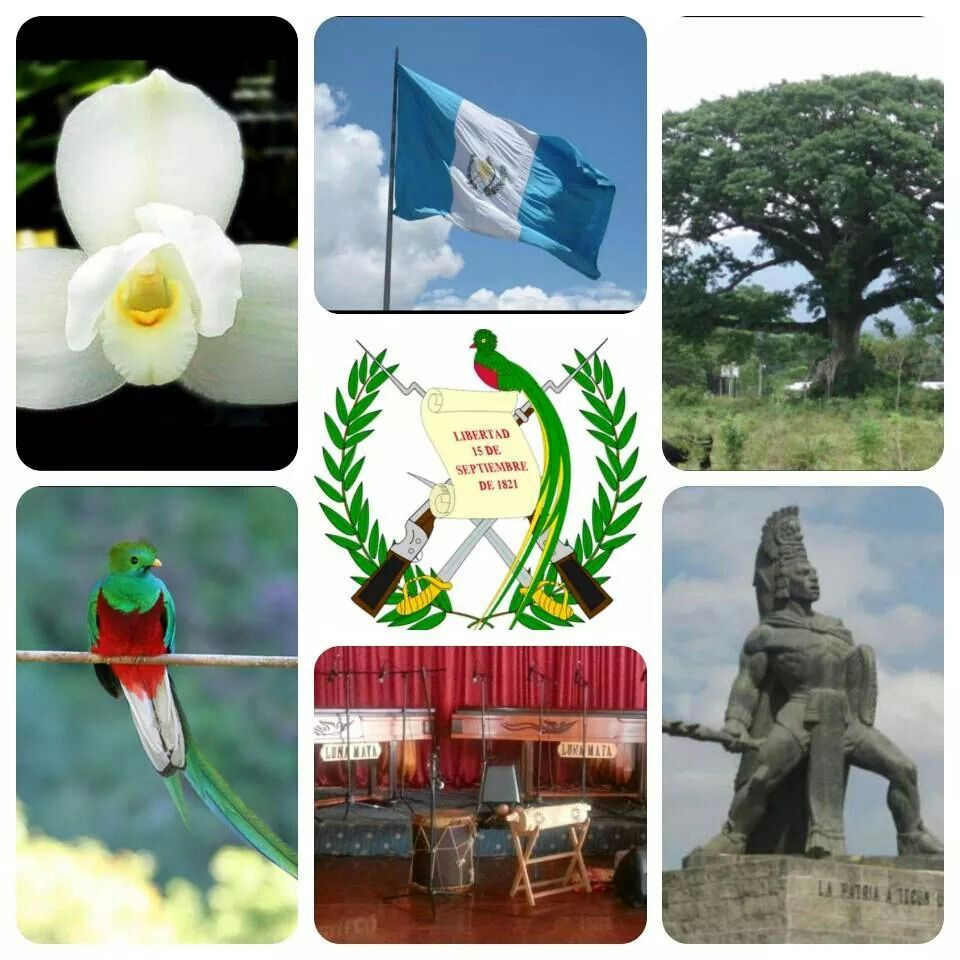
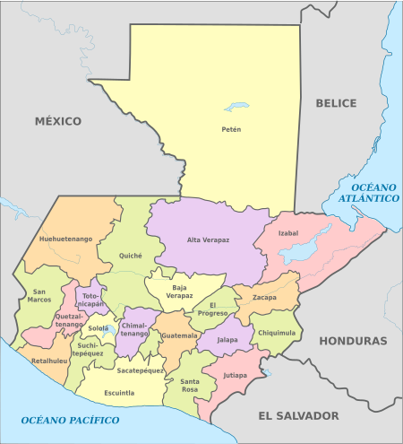

Historia
Las tierras bajas del Petén, en el norte del país, fueron el hogar de la civilización maya clásica, cuyo apogeo se situó entre los siglos VII y IX d.c. Los Mayas fueron el origen de la difusión del arte, la arquitectura, la cerámica y la escritura guatemaltecos, y el sitio de Tikal abriga aún las ruinas de 3000 estructuras, entre ellos, templos piramidales, plazas y numerosos monumentos. Entre 1250 y 1520 fueron organizados los primeros estados (Quiché, Cakchiquel), cuyas guerras perpetuas debieron facilitar la colonización española. Fue el lugarteniente de Hernán Cortés, Pedro de Alvarado, quien conquistó el país, en 1524. Santiago de Guatemala, la primera capital, fue fundada en 1527. En 1542, el país formó la capitanería general de Guatemala, bajo la dependencia del virrey de México. El país proclamó su independencia el 15 de septiembre de 1821, para ser inmediatamente integrado al imperio mexicano de Iturbide. Recuperó su autonomía en 1823 y luego formó parte de las Provincias Unidas de América Central, constituidas por las actuales Guatemala, Honduras, Salvador, Nicaragua y Costa Rica. La federación se dislocó en 1839 después de una revuelta dirigida por el guatemalteco Rafael Carrera, proclamado presidente vitalicio en 1854. A fines del siglo XIX, bajo la presidencia de Justo Rufino Barrios (1873-1885), el país entró en una fase de expansión económica (desarrollo del cultivo de café y las infraestructuras) que se acompañó de una apertura a los intereses extranjeros, proseguida bajo la presidencia de Manuel Estrada Cabrera (1898-1920). Fue en esta época que la empresa norteamericana United Fruit Company constituyó, en la costa del Pacífico, un verdadero imperio bananero que fue la primera potencia económica del país. La política del general Jorge Ubico, presidente desde 1931 y ferviente partidario de la oligarquía hacendada, se mostró tan represiva que fue derrocado en 1944. Un civil, Juan José Arévalo fue elegido presidente el mismo año. Logró acabar su mandato a pesar de veinte intentos de golpe y, en 1948, una contienda con Gran Bretaña sobre la frontera de la Honduras-Británica, futuro Belice. El coronel Jacobo Arbenz Gúzman, elegido en 1951, prosiguió la política progresista de su predecesor, en particular una reforma agraria que perjudicaba a un gran número de intereses norteamericanos (una parte de las tierras no cultivadas de la United Fruit debían regresar al Estado). Enseguida los Estados Unidos acusaron a Guzmán de simpatías comunistas, y su gobierno fue derrocado en 1954 por un ejército de exiliados políticos dirigidos por el coronel Carlos Castillo Armas, con la ayuda de la CIA. Este último fue nombrado, después elegido presidente, el mismo año. Después de su asesinato, en 1957, el general Ydígora Fuentes debió sucederle. En el transcurso de la década siguiente, el país entró en un período de problemas políticos cada vez más violentos que oponían a la guerrilla rural pro-revolucionaria (IAR, Movimiento del 13 de mayo), al poder represivo detentado de hecho por los militares, y a las milicias de extrema derecha (Nueva Organización Anticomunista, Mano Blanca) sostenidas por el ejército. Los asesinatos políticos pusieron fin a los mandatos del general Carlos Araña Osorio, elegido presidente en 1970, luego, después del año 1974, del general Kjell Laugerud García. En la misma época, el país fue víctima de un ciclón devastador (1974) y un violento terremoto (1976) que dejaron un millón de guatemaltecos sin techo. La violencia tuvo entonces un aumento considerable, que marcó la presidencia del general Romeo Lucas García (1978-1982). La guerra civil había dejado ya decenas de miles de víctimas. La victoria de los sandinistas en 1979 en Nicaragua exacerbó la guerilla, y la represión aumentó, tocando a los indios y diversos grupos de opositores (sindicalistas, universitarios, periodistas, etc.). En enero de 1980, 39 indios murieron en el incendio de la Embajada de España, que ellos ocupaban para reclamar una investigación sobre los crímenes cometidos contra su comunidad. Las "desapariciones" se volvieron una constante del terrorismo de estado. El 23 de marzo de 1982, dos semanas después de la elección del general Aníbal Guevara para la presidencia, un golpe de estado militar instaló en el poder una junta de tres hombres dirigida por el general Efraín Ríos Montt. Desde junio, éste asumió solo la presidencia. Habiendo rechazado los guerilleros su oferta de amnistía, las actividades anti-guerilla se extendieron a los campos, conduciendo a un verdadero genocidio contra los indígenas y los paisanos. Ríos Montt fue derrocado el 8 de agosto de 1983 por el general Oscar Mejía Victores. La elección presidencial de diciembre de 1985 fue ganada por el demócrata-cristiano Vinicio Cerezo Arévalo, sobrino del antiguo presidente José Arévalo, y primer presidente civil después de 23 años. El país conoció una nueva escalada de violencia e inseguridad en 1986 y 1987 (secuestros, asesinatos). En enero de 1996, el conservador Alvaro Arzu fue elegido para la presidencia del país. Arzu purgó el alto mando del ejército de los oficiales implicados en las exacciones cometidas contra la población civil y logró firmar el 29 de diciembre de 1996 un acuerdo de paz con la guerrilla de la Unión Revolucionaria Nacional Guatemalteca (UNRG). Poniendo fin a 36 años de una guerra civil que dejó más de cien mil muertos y cuarenta mil desaparecidos y obligando a más de cien mil personas a dejar el país, este acuerdo preveía la desmovilización de las fuerzas rebeldes, la reducción de los efectivos del ejército y el reconocimiento de los derechos económicos, políticos y culturales de la mayoría india. El Premio Nobel de la Paz 1992 había sido otorgado simbólicamente a Rigoberta Menchú, una joven india maya exiliada en México para escapar a la persecución. Rigoberta Menchú, en adelante portavoz de la causa de los indios, regresó a vivir en Guatemala, como lo han hecho cerca de 2500 personas desde 1993.

Símbolos patrios
Extensión Territorial y Departamentos
Tiene una extensión territorial de 108,889 km², y unos 400 km de costas rodeadas por los océanos del Pacífico y Atlántico, a su vez está a 500 metros sobre el nivel del mar, también detenta una zona selvática al norte en peten conociendo así cual es la extensión territorial de Guatemala. La república de Guatemal cuenta con 22 departamentos.
Lugares Turísticos